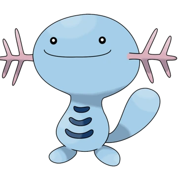

Pokemon Representation
There are some pokemons that take inspiration from real life animals, and axolotl happens to be one of the inspiration. Wooper is a blue amphibious pokemon representing an upright, armless axolotl. The below picture shows Wooper's image.
